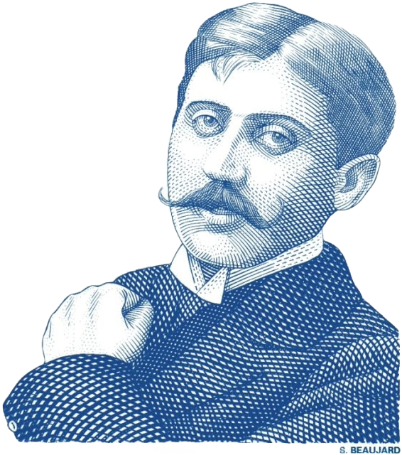

Proust Questionnaire
What is your idea of perfect happiness?
No rush
What is your greatest fear?
A gathering storm
What is the trait you most deplore in yourself?
I spare myself deploring anything
What is the trait you most deplore in others?
Crudity
Which living person do you most admire?
I'm wary; everyone has Mr. Hyde
What is your greatest extravagance?
Breakfast in bed
What is your current state of mind?
Focused
What do you consider the most overrated virtue?
Athletic ability
What do you most dislike about your appearance?
Not enough freckles
Which living person do you most despise?
Bullies
What is the quality you most like in a man?
Wit
What is the quality you most like in a woman?
Wit
Which words or phrases do you most overuse?
Co nie? (innit?)
What or who is the greatest love of your life?
Earl grey tea
When and where were you happiest?
It was many and many a year ago,
In a kingdom by the sea
Which talent would you most like to have?
Skateboarding
If you could change one thing about yourself, what would it be?
Dislike of cooking
What do you consider your greatest achievement?
Always the next one
If you were to die and come back as a person or a thing, what would it be?
A domesticated cat
Where would you most like to live?
Kraków in the 80s, 90s, 2000s
What is your most treasured possession?
My backpack
What do you regard as the lowest depth of misery?
Having a migraine
What is your favorite occupation?
Putting things in order
What is your most marked characteristic?
Hmm... jumpy walk?
What do you most value in your friends?
Getting me
Who are your favorite writers?
All my favourites have disappointed me
Who is your hero of fiction?
Sebastiano Paf
Which historical figure do you most identify with?
I identify with my ancestors, people of peasantry and working-class
Who are your heroes in real life?
Food delivery couriers
What are your favorite names?
(dear) Heather and Jeremy (spoke in class today)
What is it that you most dislike?
Licorice
What is your greatest regret?
Never getting to see Modern Talking live
How would you like to die?
Without noticing
What is your motto?
On to the next thing
The Proust Questionnaire is a set of questions designed to reveal the personality traits, preferences, and values of an individual. It originated from a questionnaire answered by the French writer Marcel Proust at the end of the 19th century.
